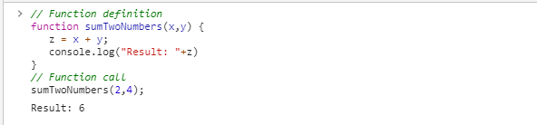
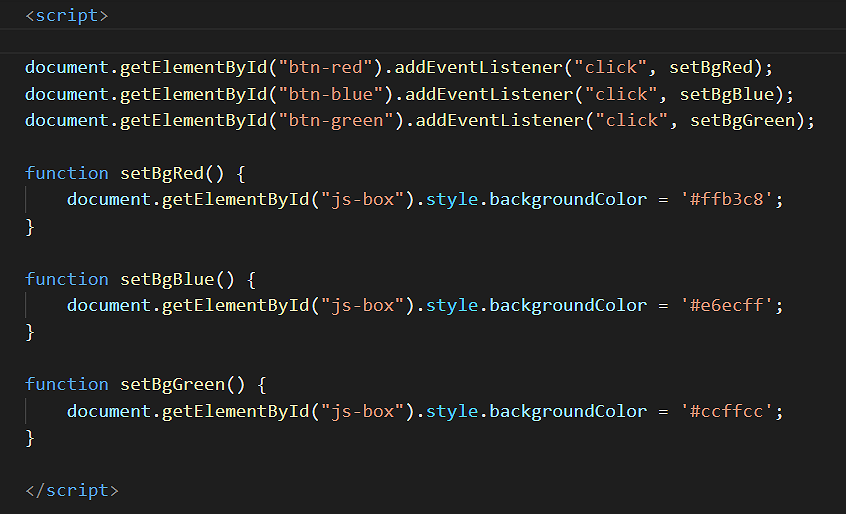
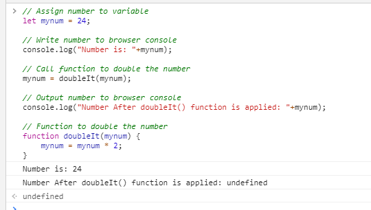

Objectives
In this Tutorial you will learn how to:
- Pass one or more parameters to a function
- Return a value back from a function to the statement that called it.
In this Tutorial, you will meet the following terms:
- Function parameter
- Function argument
Exercise Files
In this Tutorial you will work with the following HTML files:
Download the compressed file below and copy it to your websites/javascript/exercises sub-folder.
📄 6.zip
Unzip the two files it contains into a sub-folder named /6.

Functions that need parameters
Sometimes you will want to a function to perform a task that requires some 'raw material'. Providing information to a function that is then manipulated in some way is known in JavaScript terms as passing a parameter to a function. A function may be designed to accept several parameters.
For, example the 'sumTwoNumbers' function below accepts two parameters, which it then adds together.
function sumTwoNumbers(x,y) {
z = x + y;
console.log("Result: "+z)
}
As you can see, the function definition includes the names of the parameters within brackets. When a function accepts multiple parameters, they are separated by commas.
Function Parameter
Information that is passed to a function for the function to work on. The function may use the information to perform a calculation, or to decide which of a number of possible instructions to perform.
Note the following:
- The parameters x and y are declared within the function definition. But their variable type – such as string or numeric – is not specified.
- Also, a JavaScript function does not check the number of parameters passed to it from elsewhere in the code.
Such a function would be called or invoked elsewhere in the code as follows:
sumTwoNumbers(2,4);
Copy the following lines to the Console tab of your browser DevTools and verify it runs correctly:
// Function definition
function sumTwoNumbers(x,y) {
z = x + y;
console.log("Result: "+z)
}
// Function call
sumTwoNumbers(2,4);

The function declaration can be located either above (before) or below (after) the call to the function. So this code will run without error.
// Function call
sumTwoNumbers(2,4);
// Function definition
function sumTwoNumbers(x,y) {
z = x + y;
console.log("Result: "+y)
}
Function Argument
The particular value of the parameter passed to a function when the function is called. If a JavaScript function changes an argument's value, the value of the parameter outside the function does not change.
If required, you can assign a value to a parameter as part of the function declaration. For example:
function sumTwoNumbers(x,y=4) {
z = x + y;
}
In summary, parameters (or 'formal' parameters) are defined as part of the function declaration. Arguments (or 'actual' parameters) are literal values that are passed to the function.
6.1 provides an example of passing multiple parameters to a function that performs an arithmetic operation.
Exercise 6.1: Passing multiple parameters to a function
- Open the following file in VS Code and your web browser: 📄 exercise-6-1.html
- You can see it contains three input fields (ids of number-1, number-2 and number-3) and a 'box' created with a div HTML tag (id of resultBox ). There is also a button that displays as 'Find Average'.
- In VS Code, just after the opening script tag, add an onclick event handler to the button to connects it to a function with the name doCalc.
<p><button onclick="doCalc()"><i class="fas fa-calculator"><\/i> Display Average</button><\/p>
- Next, add the following function to capture the user inputs, perform the arithmetic, and display the result.
function doCalc() { // Assign user inputs to variables let x = parseFloat(document.getElementById("number-1").value); let y = parseFloat(document.getElementById("number-2").value); let z = parseFloat(document.getElementById("number-3").value); // Calculate the average let average = (x + y + z) / 3; // Display result to user document.getElementById("resultBox").innerHTML = average; } - In VS Code, save the exercise-6-1.html file, reload it in your web browser, and verify that the code runs correctly.

Let's update the code in a number of ways.
- Remove the event handler from the button and give the button on id of btnCalc
<p><button id="btnCalc"><i class="fas fa-calculator"></i> Display Average</button></p>
- Just after the opening script tag, add the following event listener.
document.getElementById("btnCalc").addEventListener('click', doCalc); - Save the exercise-6-1.html file, reload it in your web browser, and verify that the code still runs correctly.
The second step is to separate the calculation of the average of three numbers into a second function.
- In VS Code, replace the current doCalc() function with two functions as shown below.
function doCalc() { // Assign user inputs to variables let x = parseFloat(document.getElementById("number-1").value); let y = parseFloat(document.getElementById("number-2").value); let z = parseFloat(document.getElementById("number-3").value); // Call the average function getAverage(x,y,z); } function getAverage(x,y,z) { // Calculate the average let average = (x + y + z) / 3; // Display result to user document.getElementById("resultBox").innerHTML = average; }It is now the second function, named getAverage, that calculates the average of the three numbers and assigns the output to the resultBox HTML element. - Save the exercise-6-1.html file, reload it in your web browser, and verify that the code still runs correctly.
In Exercise 6.2, you will use a function to accepts a single parameter to minimise the amount of code needed to perform a simple task.
Exercise 6.2: Passing a parameter to a function
- Open the following file in VS Code and your web browser: 📄 exercise-6-2.html
- It contains three buttons, with ids of btn-red, btn-blue and btn-green. Each button is linked, via an event listener, to one of three separate functions: setBgRed, setBgBlue and setBgGreen. 
- Click the three buttons to verify all three functions run without error. Now we will make some updates to the code.
- First, replace the three functions with the following single function that accepts one parameter named colorCode.
function setBgColor(colorCode) { document.getElementById("js-box").style.backgroundColor = colorCode; } - Next, edit the three event listeners as follows.
document.getElementById("btn-red").addEventListener('click', function() { setBgColor('#ffb3c8') }); document.getElementById("btn-green").addEventListener('click', function() { setBgColor('#ccffcc') }); document.getElementById("btn-blue").addEventListener('click', function() { setBgColor('#e6ecff') }); - Save the exercise-6-2.html file, reload it in your web browser, and verify that the code still runs correctly.
Functions that return values
You have seen how an event handler can pass a parameter to a function. The opposite is also true: a function can pass a value back to the place from which the function was called.
This action is described as the function returning a value.
Until now you have only called functions through event handlers such as onclick and onload. You can also call a function directly from a statement. The following two statements call two different functions.
- The first function call does not pass a parameter.
- The second function call passes the parameter named 'temperature'.
myvar = doSomething(); temperature = updateNow(temperature);
Consider the following script in which a number is assigned to a variable and the variable's value to written to the browser console.
The function, named doubleIt(), is then called and applied to the numeric variable, and its amended value is written to the browser console.
// Assign number to variable
let mynum = 24;
// Write number to browser console
console.log("Number is: "+mynum);
// Call function to double the number
mynum = doubleIt(mynum);
// Output number to browser console
console.log("Number After doubleIt() function is applied: "+mynum);
// Function to double the number
function doubleIt(mynum) {
mynum = mynum * 2;
}
What happens when you copy and paste the doubleIt() function and the script that calls it to the browser console?
The cause of the error is as follows: aftef the doubleIt() performs its instruction, there is no mechanism for the function to send back or 'return' its answer back to the code from which the function was called.
You can correct this problem by insert a return command that sends the 'mynum' variable back to the calling script as shown below.
function doubleIt(mynum) {
mynum = mynum * 2;
return mynum;
}
Copy-and-paste the updated code below to your browser console and run the code.
// Assign number to variable
let mynum = 24;
// Write number to browser console
console.log("Number is: "+mynum);
// Call function to double the number
mynum = doubleIt(mynum);
// Output number to browser console
console.log("Number After doubleIt() function is applied: "+mynum);
// Function to double the number
function doubleIt(mynum) {
mynum = mynum * 2;
return mynum;
}
The code should now run correctly as shown below.
Another feature of the return command is that it halts any further execution of the function. That is, any instructions located after the return command in the function are ignored.
Uploading your JavaScript exercise files to GitHub
Follow these steps below to upload your entire 📁 /javascript sub-folder to your website on GitHub.
- Sign in to Github and click the name of the repository (‘repo’) that holds your web pages.
- On the next GitHub screen displayed, click the Add file button near the right of the screen and then choose Upload files from the dropdown list.

- In File Explorer (Windows 10) or Finder (Apple Mac), select your entire 📁 /javascript sub-folder, and drag-and-drop it to your repository on GitHub.

- Scroll down to the bottom of the GitHub screen, and accept or edit the short message (Add files via upload) in the Commit changes box. Finally, click the green Commit changes button to upload your entire 📁 /javascript sub-folder and all the exercise files it contains.
Your uploaded files are published on GitHub at a web address similar to the following, where username is the username you have chosen for your GitHub account:
https://username.github.io/javascript/exercises/6/exercise-6-1.html
https://username.github.io/javascript/exercises/6/exercise-6-2.html
It may take a few minutes for your uploaded files to appear on GitHub.
Lesson Summary
Sometimes you will want to function to perform a task that requires some 'raw material'. Providing information to a function that is then manipulated in some way is known in JavaScript terms as passing a parameter to a function. A function may be designed to accept several parameters. The function may use the information to perform a calculation, or to decide which of a number of possible instructions to perform.
You can pass multiple literals as parameters to a function, and a function's parenthesis can contain multiple variables. The only rule is this: The number of variables in the parenthesis of the function must match the number of literals in the event handler that calls the function.
Event handlers are not the only way to call a function. You can also call a function directly from a statement.
When a statement calls a function directly, there must be a mechanism for the function to send its result back to the location from which the function was called. JavaScript offers a return command for this purpose. An example is shown below.
function doubleIt(mynum) {
mynum = mynum* 2;
return mynum;
}
Another feature of the return command is that it halts any further execution of the function. That is, any instructions located after the return command in the function are ignored.
Return to Contents.